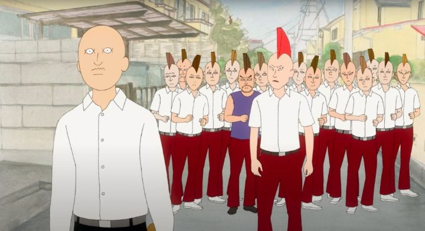

When you think of Japan and animation, you would naturally think of "anime." But there's a lot of indie animation in Japan too, with no visual resemblance to the iconic eyes and unrealistically cool / cute poses that we've come to know from that sub-genre. But like all indie work, it's expensive and time-consuming, and it's rare to see a indie feature animated film from anywhere, let alone Japan. And yet, "On-Gaku - Our Sound" is one such movie, gaining a cult following after screening at multiple international festivals. The movie is about high school students who form a rock band. But it's better than that. In a story about adolescent artists, you would expect the characters to be passionate about what they're doing, inspiring them to continue. Not so in "On-Gaku." Kenji is a ne'er-do-well, a punk that hangs out with his two friends, Asakura and Ota, sometimes picking fights with gangs from other schools, but usually just playing video games in a clubroom. Kenji is a natural leader, but is socially awkward and does what he pleases. His quiet demeanor, blunt speech and reputation is enough for others to fear him: the intro scenes shows three rival deliquents giving up a fight without Kenji saying a single word. And THIS is the guy that forms a rock band? Indeed, with no particular direction in life or anything else to do, he accidently comes across another band member talking about his next gig. Seeing at as something to do, he convinces his friends to give it a try with him. They simply steal some instruments from the music room, without knowing the difference between a bass and a guitar, or how to tune them. They improvise a simple rhythm, something that sounds like the intro to a larger song, and stop, thinking it's good enough. By chance, they get registered to perform at a local festival. Meanwhile, their rival gangs plan things while Kenji seems to have gone quiet (when he really just grew bored of beating up said gangs). "On-Gaku" has a quiet, deadpan-style of humor that would appeal to newer generations of teenager. It's similar to movies like "Scott Pilgrim VS The World" and "Juno," with a hint of the work by Dash Shaw. It's easy to do this wrong and come off as lazy or poorly written, but "On-Gaku" pulls it off: it's quite funny. I can only imagine how much fun it would be to watch with an audience, when the camera holds a still shot for just a little too long before someone blurts something out. There's still a plot about discovering yourself and becoming an artist here, but the perspective of seeing kids who have no business being musicans is refreshing. And there are some more nuanced perspectives and musical performances from side-characters. Despite some minor off editing choices, it's a confident work by director Kenji Iwaisawa. To help keep the movie managable with a minimal team and budget, the animation relies on rotoscope and mostly-still camera shots. But to give the movie some personality (or to make things easier still for the animators), characters have cartoonishly simple and cute faces and eyes, vaguely like something out of an old newspaper comic strip. It's not pretty, but it helps one forget they're looking at rotoscoped movement (which tends to be distracting, especailly in other Japanese examples). The still backgrounds look hand-painted, and don't have many background crowds, again making the best out of limited resources. The Japanese-only dialogue track and music work for the movie, although the music track is very sparse, leaving most of the movie quiet (this works well for the tone, but again feels like a necessary limitation on the production).But during the music performances, the movie isn't afraid to experiment and get abstract with its style. The music during those parts is great too. Those scenes are celebrations of indie animation and music, and are fantastic to witness, smartly put into the movie without being out of place. "On-Gaku - Our Sound" certainly isn't anime, but I think it's a surprisingly charming crowd-pleaser whether you're an otaku or not. Simple, unrefined, brilliant. Even watching alone at home, I stood up and applauded at the end.
- "Ani" More reviews can be found at : https://2danicritic.github.io/ Previous review: review_Okko's_Inn Next review: review_One_Piece_Film_-_Gold